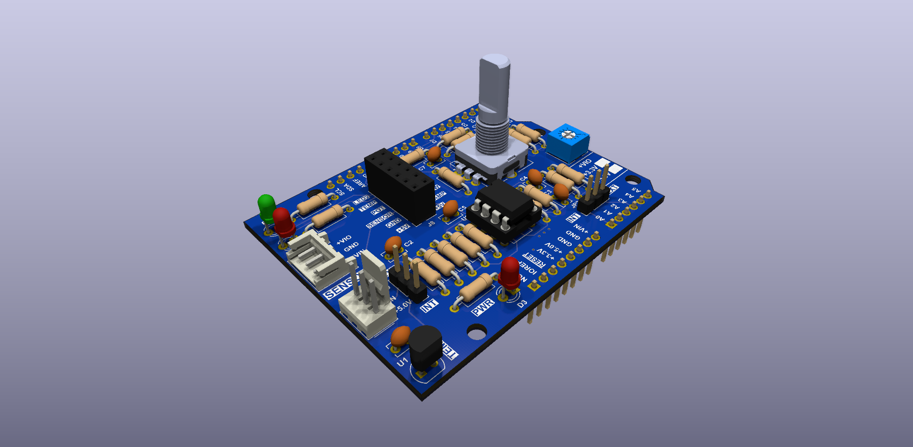
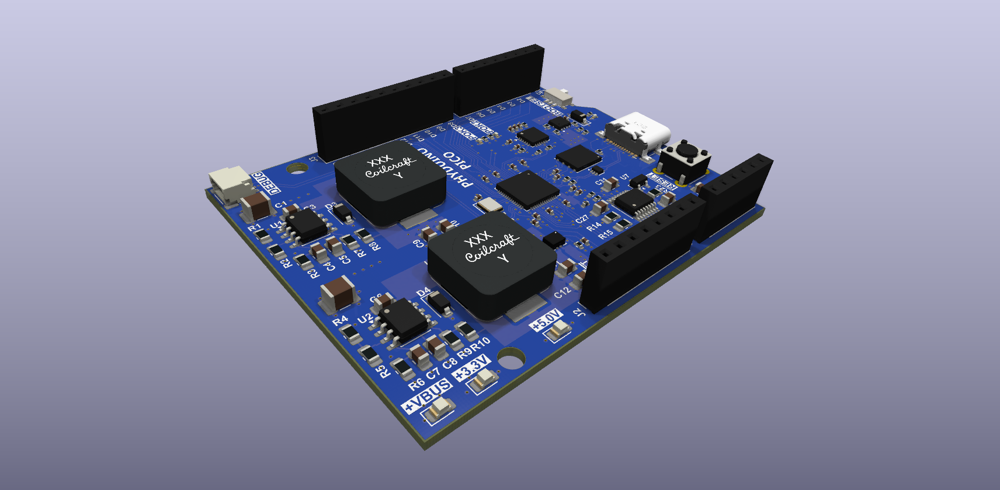

Build two boards and program them. You start with the Analog Shield, where you learn through-hole soldering, then move on to surface-mount soldering with the Phyduino Pico, an Arduino Uno-style RP2040 board that the shield plugs onto. You then program the pair in the Arduino IDE or in MicroPython. Everything you need for the course is linked below.

Through-hole shield with an LMT84 temperature sensor, two-stage op-amp amplifier, LEDs, encoder and potentiometer.
Interactive BoM, schematic, PCB drawings, 3D model and datasheets.
Library and example sketches for the shield on the Phyduino Pico.
One-file library: copy it next to your main.py to use every part of the shield.

Arduino Uno-style RP2040 development board with an on-board 12-bit ADC and USB-C power delivery.
Interactive BoM, schematic, PCB drawings, 3D model and datasheets.
Arduino IDE board package built on the Raspberry Pi pico-sdk.
Board pin names, on-board LED and ADC, and USB-C supply readings, built into the firmware.
| Arduino IDE | Download the Arduino IDE from arduino.cc | Open |
| Board package | Latest release of the Phyduino board package | Open |
| Analog Shield library | Latest release of the Analog Shield library (.ZIP) | Open |
| Firmware | Latest Phyduino Pico firmware (.uf2) with MicroPython and the Phyduino library built in | Open |
| mpremote | Installing mpremote to copy files to the board and run code | Open |
| PyCharm | Setting up PyCharm for the Phyduino Pico | Open |
| Analog Shield library | Latest release of the Analog Shield MicroPython library (analog_shield.py) | Open |